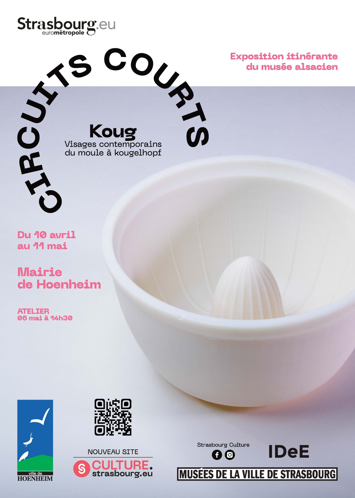

- Cet événement est terminé
Exposition Koug – Visages contemporains du moule à kougelhopf
10 avril à 8 h 00 min - 11 mai à 17 h 00 min
Navigation de l'événement

La Ville de Hoenheim a le plaisir d’accueillir l’exposition itinérante “Koug – Visages contemporains du moule à kougelhopf”, proposée par le Musée Alsacien, dans le cadre de la démarche Circuits courts du 10 avril au 11 mai 2026 à la Mairie de Hoenheim.
Accessible aux horaires d’ouverture de la mairie (de 8h à 12h et de 13h à 17h), cette exposition invite le public à redécouvrir un emblème fort du patrimoine régional à travers une approche résolument contemporaine.
Un symbole alsacien revisité
Gâteau aux origines légendaires, le kougelhopf occupe une place privilégiée dans la culture alsacienne. Qu’il soit sucré ou salé, il accompagne les moments festifs comme les instants plus intimistes, notamment lors du traditionnel Kàffekranzel.
À travers cette exposition, le moule à kougelhopf — reconnaissable à sa forme en turban — devient source d’inspiration pour des créations originales. Issues notamment d’un workshop du collectif de design IDeE en 2007, ces œuvres détournent et réinventent l’objet :
- Kugelcafé, un moule transformé en tasse à café
- Kougelacitron, combinant moule et presse-agrumes
- ou encore Minikoug, aujourd’hui produit et commercialisé
Ces créations illustrent la richesse des savoir-faire en pâtisserie et en poterie, tout en explorant de nouvelles fonctions et usages.
Une démarche culturelle de territoire
L’exposition s’inscrit dans le dispositif Circuits courts, porté par les Musées de la Ville de Strasbourg. Cette initiative vise à faire voyager les collections hors les murs et à valoriser la création contemporaine locale.
Née en 2020 dans le contexte de la crise sanitaire, cette démarche permet de soutenir les artistes du territoire tout en proposant des expositions conçues en lien étroit avec les communes de l’Eurométropole.
Dans le contexte actuel de rénovation du Musée Alsacien, cette exposition constitue une opportunité privilégiée de partager ses collections avec un large public et de les mettre en dialogue avec la création contemporaine.
Un rendez-vous convivial
Un atelier est proposé : mercredi 6 mai 2026 à 14h30 à la Mairie de Hoenheim – dans le cadre du Kaffekränzel
“Do gibt’s Köjlhùpf un Bùtter drùff !” (« Ici, il y a du kougelhopf avec du beurre dessus ! »)
Un moment convivial pour prolonger la découverte de l’exposition autour de ce symbole gourmand et fédérateur.
Informations pratiques
📍 Lieu : Mairie de Hoenheim
📅 Dates : du 10 avril au 11 mai 2026
🕒 Accès : aux horaires d’ouverture de la mairie (de 8h à 12h et de 13h à 17h)
🎟️ Entrée libre
Plus d’informations : Service Animation, Culture et Protocole 28 rue de la République – Tél. 03 88 19 23 73 – manifestations@ville-hoenheim.fr.